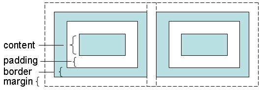
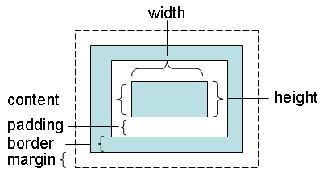
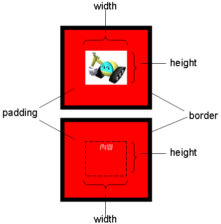
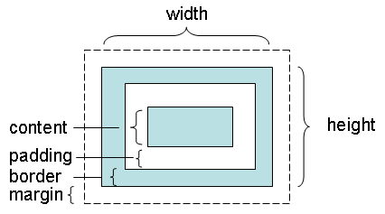
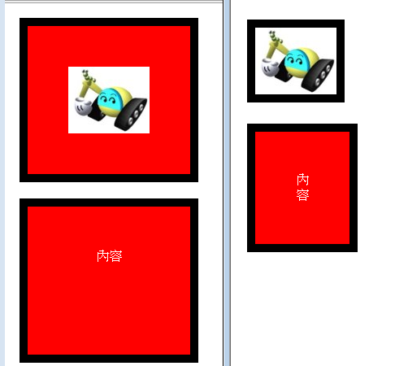
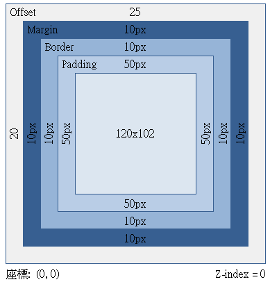
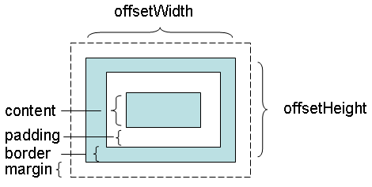
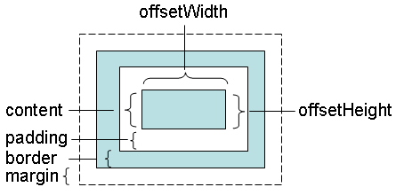

|
|
你可以透過樣式的width與height來設定元素的寬高，但要注意所謂的寬高涵義為何，一個元素的寬高如何定義，視它採取的盒模式（Box model）為何而定。所謂盒模型，就是將元素當作一個盒子來看待，每個元素都會有四個部份可以設定。  內容（content）就是放置元素真正有內容的部份，像是一段文字、一個圖片或者是其它子元素。每個元素都可以有邊框（border）。內距（padding）是指內容區與邊框的距離。邊距（margin）則是指與另一元素的邊框距離。內容可以設定寬、高，內距的上、下、左、右可以分別設定距離，邊框可以設定寬度，而邊距的上、下、左、右可以分別設採定距離。 當你指定元素的width與height時，若採取的是標準CSS盒模型，則指定的width、height僅指定內容區大小。  在遵守標準的瀏覽器中，就是採取這種盒模型。例如下面這個範例： <html> 範例中的圖就是內容區，寬、高為100x82，加上內距50px與邊框10px，元素視覺上看得到的部份為(100+50*2+10*2)x(82+50*2+10*2)，也就是220x202。下方了一個內容區寬、高，內距與邊框相同的<div>以資對照。  然而上圖是使用Firefox看到的結果，如果你使用Internet Explorer，就不是那麼一回事了，那是因為Internet Explorer對上面的範例採取了預設的相容模型，又稱為怪異模型（Quirks model），它對寬、高的定義原則上是內容區加上內距與邊框：  所以你使用Internet Explorer，會看到下圖右邊的結果（左邊是Firefox的結果）：  由於圖片就等於所設定的width、height，所以圖片顯示的部份已完全看不到內距，而下面文字的部份，文字受到壓縮而變成了看似垂直的文字狀態（試著在兩個元素設定CSS的overflow屬性為auto或scroll，你會看到什麼？）。 怪異模式之所以為怪異模式，是因為它還會作許多奇怪的調整，例如上面為了完整顯示圖片與文字，自己還作了內容區大小的調整。例如在Internet Explorer 8的開發者工具中，圖片部份可看到的維度資訊如下：  如果不想讓Internet Explorer進入怪異模式，必須有適當的<!DOCTYPE>設定，在Internet Explorer 8以下的話，必須設定： <!DOCTYPE html PUBLIC "-//W3C//DTD HTML 4.01 Strict//EN">
將這行加入到範例中的第一行，在Internet Explorer下，就會採用標準CSS盒模型，你看到的就會是與Firefox相同的結果。 每個元素都會有offsetWidth與offsetHeight特性，這兩個特性是唯讀的，可分別取得元素的寬與高，如果是在標準CSS盒模型下，所取得的是邊框、內距與內容區的加總大小：  如果是在怪異模式下，所取得的則是內容區的寬與高：  為了避免進入怪異模式，設定適當的<!DOCTYPE>，確定採用的是標準CSS盒模式，是極度建議的作法。 |